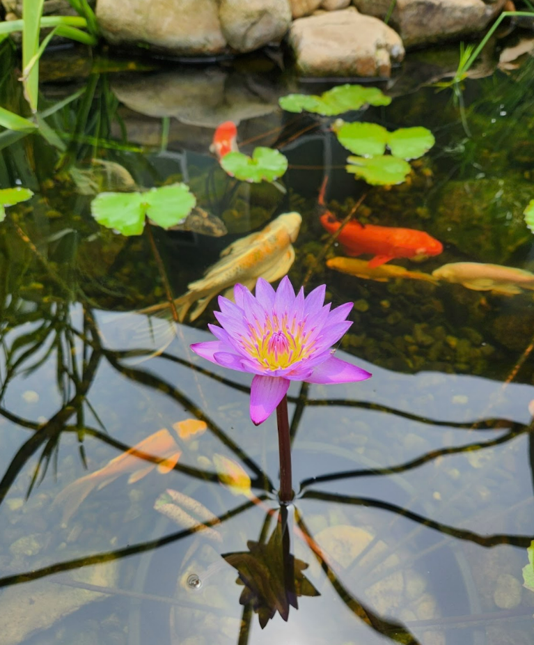

Who am I?
My name’s Veronica, and I am a junior in highschool. I love visiting mountains in Autumn to observe fall leaves along with the koi pond my mom works hard to maintain, adding green lily pads and purple flowers. Thus, preserving nature is important to me. This is the first website I have coded using HTML and CSS; special thanks to Girls Who Code for their at-home-projects!

Girls Who Code
Hey, do you want to be involved in GWC? Learn more about them using this link! This link will take you to the Code at Home Program page.
Visit GWC Programs